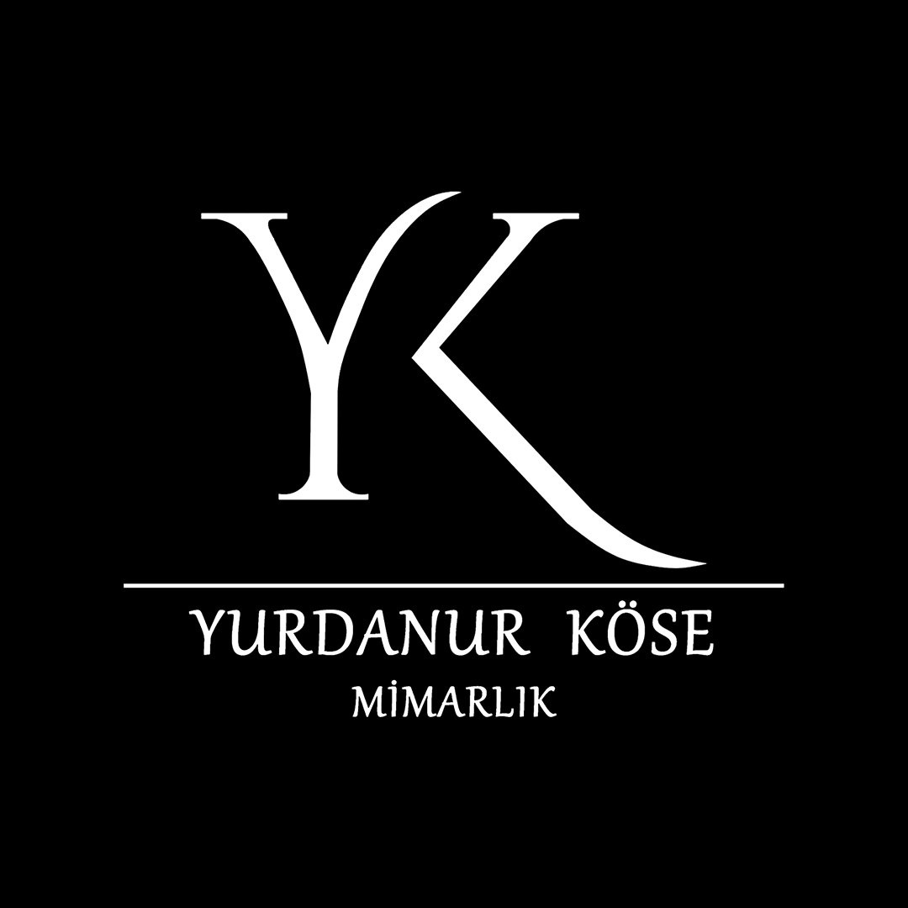

Ağır çelik konstrüksiyon montajları, temel kazıları, cephe kaplamaları ve akaryakıt tesislerimizin sahadaki gerçek imalat aşamaları.
Görsellerin üzerine tıklayarak yüksek çözünürlüklü tam ekran modunda detayları inceleyebilirsiniz.
Mimari tasarım, statik hesaplar, şantiye yönetimi ve anahtar teslim inşaat süreçleriniz için teklif alın.
İnşa edilen tüm akaryakıt tesisleri EPDK Petrol Piyasası Lisans Yönetmeliği ve TSE 12820 kriterlerine %100 uyumludur.
Yeraltı tankları, dispenser adaları ve nefeslik borularında zorunlu asgari emniyet mesafeleri milimetrik olarak uygulanır.
Zone 0, Zone 1 ve Zone 2 tehlikeli bölgelerde yalnızca ATEX sertifikalı elektrik ekipmanları kullanılır.
Şantiyelerimizde sıfır kaza toleransı ve A sınıfı İSG uzmanı denetimi esastır.
Yurdanur Köse Mimarlık İnşaat ve Tic. Ltd. Şti. olarak müşterilerimizin gizlilik haklarına azami özen gösteriyoruz.
Keşif formları üzerinden toplanan veriler yalnızca teknik analiz ve teklif hazırlığı için kullanılır, üçüncü şahıslara aktarılmaz.
6698 sayılı Kişisel Verilerin Korunması Kanunu (“KVKK”) uyarınca; Balıkesir Ticaret Sicil Müdürlüğü nezdinde 18452 sicil numarasıyla kayıtlı, Bandırma Caddesi No: 41/A Karesi / Balıkesir adresinde mukim Yurdanur Köse Mimarlık İnşaat ve Ticaret Limited Şirketi (“Şirket” veya “Veri Sorumlusu”) olarak, mimari tasarım, inşaat taahhüt, organize sanayi yapıları ve akaryakıt tesisleri mühendislik faaliyetlerimiz kapsamında kişisel verilerinizin güvenliğine ve gizliliğine azami hassasiyet göstermekteyiz.
Kişisel verileriniz aşağıdaki amaçlarla Kanun’un 5. ve 6. maddelerine uygun olarak işlenmektedir:
Toplanan kişisel verileriniz, Kanun’un 8. ve 9. maddelerinde belirtilen şartlara uygun olarak yalnızca meşru amaçlarla sınırlı olmak üzere;
Kişisel verileriniz; web sitemiz üzerindeki teklif formları, WhatsApp iletişim hattı, e-posta, telefon, şantiye tespit tutanakları ve fiziki evraklar aracılığıyla elektronik ve fiziki ortamda toplanmaktadır.
Bu süreçler KVKK Madde 5/2 uyarınca:
Kişisel verileriniz; Türk Ticaret Kanunu, Vergi Usul Kanunu ve Borçlar Kanunu'ndaki zamanaşımı ve saklama süreleri (genel olarak 10 yıl, mimari ayıba karşı sorumluluk süreleri vb.) boyunca güvenli fiziksel ve dijital arşivlerde saklanır. Sürenin dolması veya işleme amacının ortadan kalkması durumunda ilk periyodik imha döneminde güvenle silinir, yok edilir veya anonim hale getirilir.
Kanun’un 11. maddesi uyarınca veri sahipleri olarak aşağıdaki haklara sahipsiniz:
Haklarınıza ilişkin taleplerinizi "Veri Sorumlusuna Başvuru Usul ve Esasları Hakkında Tebliğ" uyarınca; ıslak imzalı dilekçenizle Bandırma Caddesi No: 41/A, Karesi / Balıkesir adresimize bizzat veya noter aracılığıyla elden iletebilir; yahut güvenli elektronik imza/mobil imza kullanarak şirketimizin kurumsal e-posta adresi olan info@yurdanurkose.com adresine gönderebilirsiniz. Talepleriniz en geç 30 (otuz) gün içinde ücretsiz olarak sonuçlandırılacaktır.